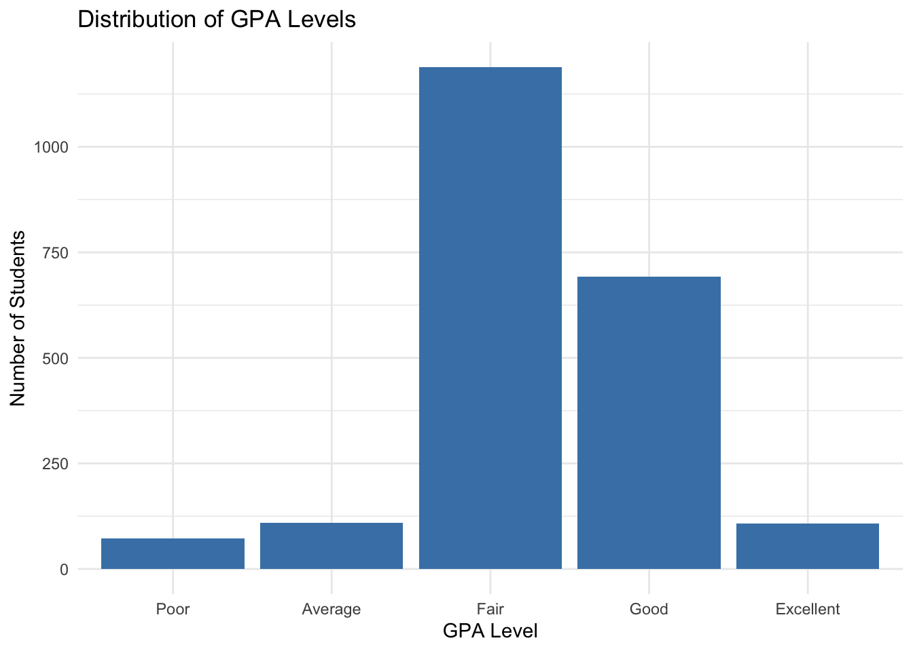
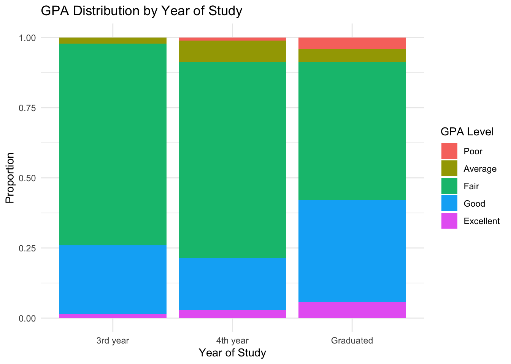
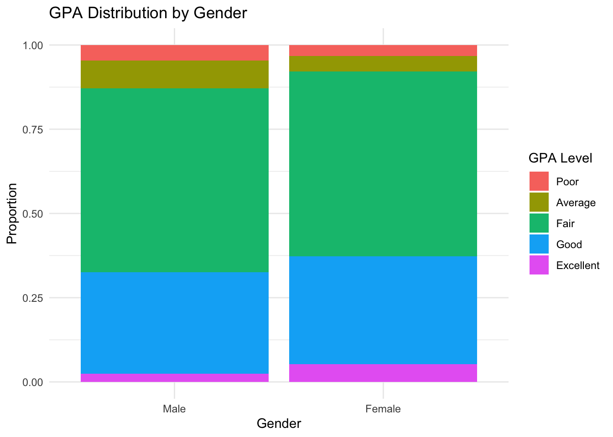
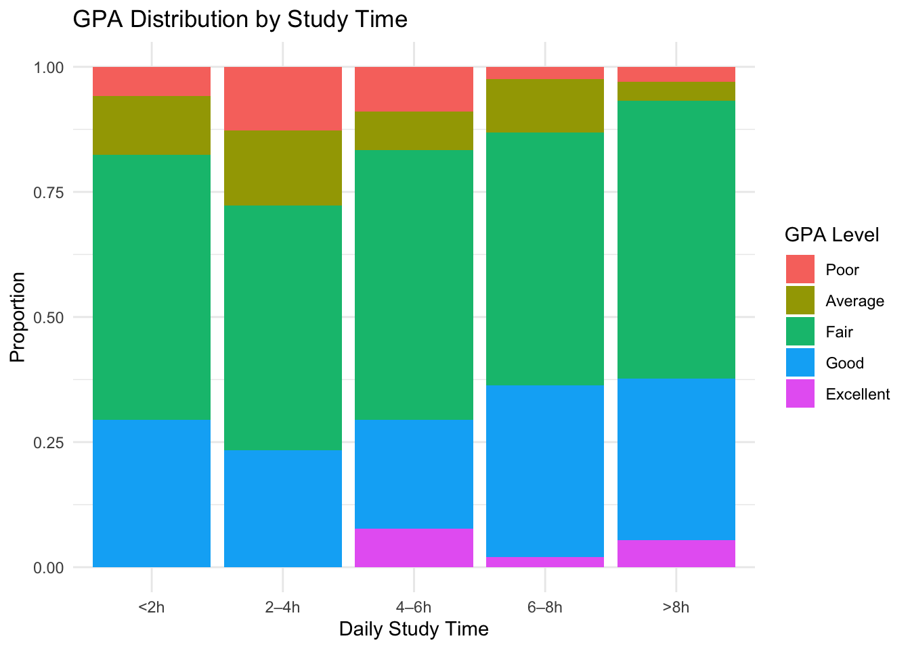
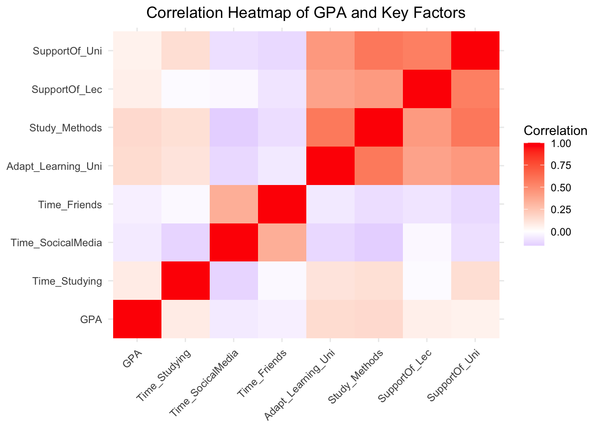

pacman::p_load(tidyverse)
pacman::p_load(readxl)
pacman::p_load(ggridges)
pacman::p_load(viridis)
pacman::p_load(forcats)Take-Home_Ex01 - Survey Insights on GPA
1. Introduction
1.1 Background
Universities are interested in understanding the factors that influence students’ academic performance. Besides individual ability, daily study habits, social activities, and the learning environment may all play important roles in shaping academic outcomes. Survey data provide an opportunity to explore how these behavioral and environmental factors are associated with students’ grade point average (GPA).
This dataset contains responses from university students on their demographic background, study behaviors, social media usage, and perceptions of the university environment, such as lecturer support, curriculum suitability, and learning facilities. By examining these variables together, we can identify patterns that may be linked to higher or lower academic performance.
1.2 Objective and Analytical Questions
The objective of this analysis is to explore the relationship between students’ academic performance (GPA) and selected behavioral and environmental factors using visual analytics techniques.
To achieve this objective, the following analytical questions are addressed:
- What is the overall distribution of GPA among students?
- Does GPA vary by demographic factors such as year of study and gender?
- How are study habits, such as time spent studying or using social media, associated with GPA?
- How do students’ perceptions of university support and learning environment relate to their academic performance?
- Which factors appear to be most strongly associated with GPA when viewed together?
These questions will be explored through a series of visualizations, with each chart highlighting a specific insight from the data.
2. Data & Variables
2.1 Dataset Overview
This dataset is based on a student survey that collects information on demographic characteristics, daily behaviors, and perceptions of the university environment. The survey includes variables related to academic performance, study habits, social media usage, and different aspects of university support.
The responses are mostly measured using categorical or Likert-scale questions, where values range from 1 to 5, representing increasing levels of intensity or agreement. For example, GPA is recorded in five categories, from “Poor” to “Excellent,” and many perception-based variables use a similar five-point scale.
2.2 Key Variables Used in the Analysis
To keep the analysis focused, a subset of variables is selected. These variables are grouped into four main categories: academic outcome, demographics, study behavior, and university environment.
Academic Outcome • GPA: Categorical variable representing academic performance, ranging from Poor to Excellent.
Demographic Variables • Year: Student’s year of study (First-year to Graduated). • Gender: Student’s gender (Male or Female).
Study Behavior Variables • Time_Studying: Average daily time spent studying. • Time_SocialMedia: Average daily time spent on social media. • Time_Friends: Average daily time spent with friends.
University Environment Variables • Adapt_Learning_Uni: Level of adaptation to the university learning environment. • SupportOf_Lec: Perceived level of lecturer support. • SupportOf_Uni: Perceived level of university support. • Study_Methods: Perceived effectiveness of personal study methods.
These variables are selected because they represent key behavioral and environmental factors that may be associated with academic performance.
3. Data Preparation
3.1 Loading the Data
df <- read_excel("Database paper.xlsx")3.2 Data Cleaning and Recoding
Most variables in the dataset are coded from 1 to 5. These values represent ordered categories, such as levels of agreement or time ranges. To make the analysis clearer, selected variables are converted into factor types with meaningful labels.
df <- df %>%
mutate(
GPA = factor(GPA,
levels = 1:5,
labels = c("Poor", "Average", "Fair", "Good", "Excellent")),
Year = factor(Year,
levels = 1:5,
labels = c("1st year", "2nd year", "3rd year", "4th year", "Graduated")),
Gender = factor(Gender,
levels = 1:2,
labels = c("Male", "Female")),
Time_Studying = factor(Time_Studying,
levels = 1:5,
labels = c("<2h", "2–4h", "4–6h", "6–8h", ">8h")),
Time_SocicalMedia = factor(Time_SocicalMedia,
levels = 1:5,
labels = c("<1h", "1–2h", "2–3h", "3–4h", ">4h")),
Time_Friends = factor(Time_Friends,
levels = 1:5,
labels = c("<1h", "1–2h", "2–3h", "3–4h", ">4h"))
)3.3 Final Dataset for Analysis
After recoding, the dataset is ready for visualization. All key variables are stored as categorical factors, making them suitable for bar charts, boxplots, and other comparative visualizations.
4. Visual Insights
Insight 1 — Distribution of GPA
Question: What is the overall distribution of GPA levels among students?
ggplot(df, aes(x = GPA)) +
geom_bar(fill = "steelblue") +
labs(
title = "Distribution of GPA Levels",
x = "GPA Level",
y = "Number of Students"
) +
theme_minimal()
Most students fall into the middle GPA categories, especially “Fair” and “Good.” Only a small proportion are in the “Poor” or “Excellent” groups. This suggests that academic performance is generally concentrated around the average range rather than at the extremes.
Insight 2 — GPA by Year of Study
Question: Does GPA distribution differ across years of study?
ggplot(df, aes(x = Year, fill = GPA)) +
geom_bar(position = "fill") +
labs(
title = "GPA Distribution by Year of Study",
x = "Year of Study",
y = "Proportion",
fill = "GPA Level"
) +
theme_minimal()
The proportional distribution of GPA across different years of study shows relatively similar patterns among most groups. In each year, the majority of students fall into the “Fair” and “Good” categories, with only a small share in the “Poor” or “Excellent” levels. This suggests that academic performance is fairly consistent across different stages of university. There is no strong visual evidence that students in higher years systematically achieve better or worse GPA outcomes compared to those in earlier years.
Insight 3 — GPA by Gender
Question: Is there a difference in GPA distribution between male and female students?
ggplot(df, aes(x = Gender, fill = GPA)) +
geom_bar(position = "fill") +
labs(
title = "GPA Distribution by Gender",
x = "Gender",
y = "Proportion",
fill = "GPA Level"
) +
theme_minimal()
Male and female students show very similar GPA distributions. In both groups, most students fall into the “Fair” and “Good” categories, with only a small share in the “Poor” or “Excellent” levels. This suggests that academic performance does not differ significantly by gender in this sample.
Insight 4 — Study Time and GPA
Question: How is daily study time associated with GPA levels?
ggplot(df, aes(x = Time_Studying, fill = GPA)) +
geom_bar(position = "fill") +
labs(
title = "GPA Distribution by Study Time",
x = "Daily Study Time",
y = "Proportion",
fill = "GPA Level"
) +
theme_minimal()
study_gpa_percent <- df %>%
count(Time_Studying, GPA) %>%
group_by(Time_Studying) %>%
mutate(prop = n / sum(n)) %>%
ungroup() %>%
select(Time_Studying, GPA, prop) %>%
pivot_wider(
names_from = GPA,
values_from = prop,
values_fill = 0
) %>%
mutate(across(-Time_Studying, ~paste0(round(.x * 100, 1), "%")))
study_gpa_percent# A tibble: 5 × 6
Time_Studying Poor Average Fair Good Excellent
<fct> <chr> <chr> <chr> <chr> <chr>
1 <2h 5.9% 11.8% 52.9% 29.4% 0%
2 2–4h 12.8% 14.9% 48.9% 23.4% 0%
3 4–6h 9% 7.7% 53.8% 21.8% 7.7%
4 6–8h 2.4% 10.6% 50.6% 34.3% 2%
5 >8h 3% 3.8% 55.6% 32.2% 5.4% Students who study longer hours show a higher proportion of “Good” and “Excellent” GPA levels. Those who study less are more concentrated in the “Average” and “Fair” categories. This suggests a positive relationship between study time and academic performance, where increased study time is generally associated with better GPA outcomes.
Insight 7 — Correlation Heatmap
Question: Which behavioral and support factors are most associated with GPA?
vars_for_corr <- df %>%
select(
GPA,
Time_Studying,
Time_SocicalMedia,
Time_Friends,
Adapt_Learning_Uni,
Study_Methods,
SupportOf_Lec,
SupportOf_Uni
) %>%
mutate(across(everything(), as.numeric))
corr_mat <- cor(vars_for_corr, use = "pairwise.complete.obs", method = "spearman")
corr_long <- as.data.frame(as.table(corr_mat)) %>%
rename(var1 = Var1, var2 = Var2, corr = Freq)
ggplot(corr_long, aes(x = var1, y = var2, fill = corr)) +
geom_tile() +
scale_fill_gradient2(
low = "blue",
mid = "white",
high = "red",
midpoint = 0,
name = "Correlation"
) +
labs(
title = "Correlation Heatmap of GPA and Key Factors",
x = NULL,
y = NULL
) +
theme_minimal() +
theme(
axis.text.x = element_text(angle = 45, hjust = 1),
plot.title = element_text(hjust = 0.5)
)
The correlation heatmap shows the overall relationships between GPA, study habits, and perceived support factors. GPA tends to have a positive association with study time, study-method effectiveness, and learning adaptation. In contrast, time spent on social media may show a weaker or slightly negative relationship with GPA. The support-related variables also show positive relationships with each other, suggesting that students who feel supported by lecturers and the university are also more likely to adapt well to the learning environment. Overall, academic performance appears to be more closely related to study behavior and perceived support than to social activity factors.
5. Conclusion
This analysis explored how demographic, behavioral, and support-related factors are associated with students’ GPA. The results show that most students fall into the middle GPA categories, with relatively few at the extreme ends. Study habits appear to play an important role, as students who spend more time studying tend to have higher GPA levels, while heavier social media use is associated with slightly lower performance.
Support-related factors also show a consistent pattern. Students who report higher levels of lecturer support, university support, and learning adaptation are more likely to achieve average or above-average GPA. The correlation analysis further suggests that study behavior and perceived support are more closely related to academic performance than social activity factors.
Overall, the findings indicate that both effective study habits and supportive learning environments may contribute to better academic outcomes.